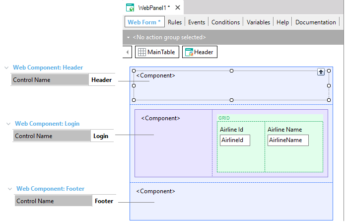
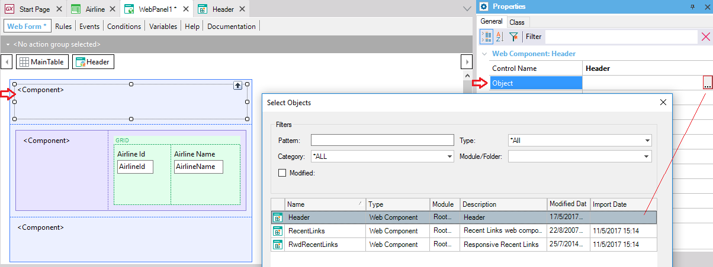

It is a control that can be inserted over a web object form, with the objective of showing inside it, the content of a Web Component object. To insert a Web Component control, drag the icon that represents it ( ) from the toolbox to a Web Form. The following image shows a Web Panel form that contains three Web Components controls.  To make the development task easier, the Control Name property of the Web Component controls have been modified so that they are more descriptive: Header, Login and Footer. A grid has also been added in a table to show a list of the airlines. In the same table, the Login Web Component control is included at the left. Header, Login and Footer were inserted to show one Web Component object each. So, the next step is to define for each Web Component control, which Web Component object must be shown inside it in runtime. To achieve it, you must fill the Web Component control Object property with the desired web component object name.  Suppose that other web objects in the same Knowledge Base have in its forms web components controls too, to show inside them, the same header and footer (or in some cases the login also). Notes
See alsoWeb Component Control Properties |
| Backlinks | ||
| Category:Common Controls | Drag event in Web | Drop event in Web |
| Insert Web Component | Link Function | |
| Web Component Control Properties | Category:Web Component object |